Passo a passo
- Abrir a tela. No menu Amostragem, clique em Regra Amostragem. A tela abre com o quadro "Pesquisa": opções PRODUTO / MATERIAL (marcada) e ÁGUA / AMBIENTE, o quadro "Filtro Produto / Material" (TIPO ITEM ANÁLISE, ITEM ANÁLISE, CÓDIGO, TIPO ANÁLISE com Físico-Químico e Microbiológica), ATIVO, os botões PESQUISAR e LIMPAR e o quadro "Regras para Amostragem" com INCLUIR.
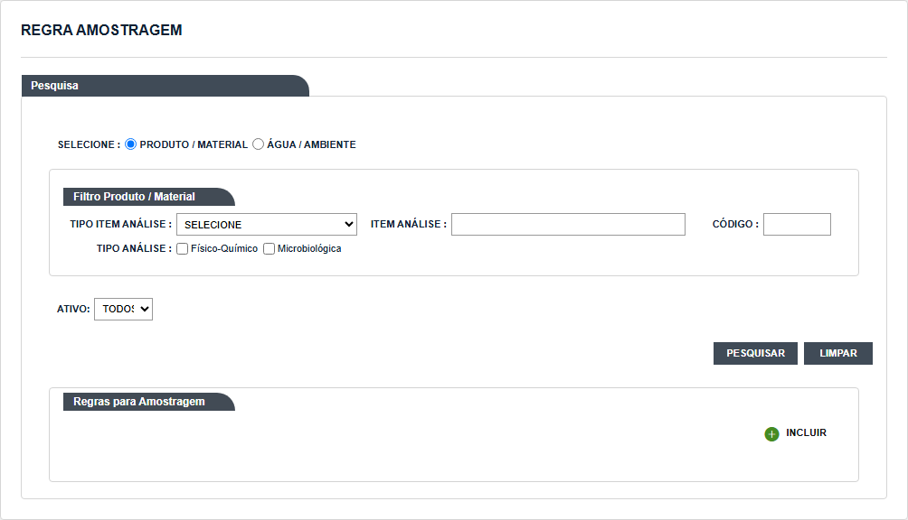
A imagem mostra o título REGRA AMOSTRAGEM, as duas opções de trabalho, os filtros, os botões PESQUISAR e LIMPAR e o quadro "Regras para Amostragem" com INCLUIR, sem linhas.
- Incluir sem escolher o item. Clique em INCLUIR sem escolher o tipo de item e o item: aparece a faixa rosa "Selecione Tipo Item Análise e Item Análise antes de incluir.".
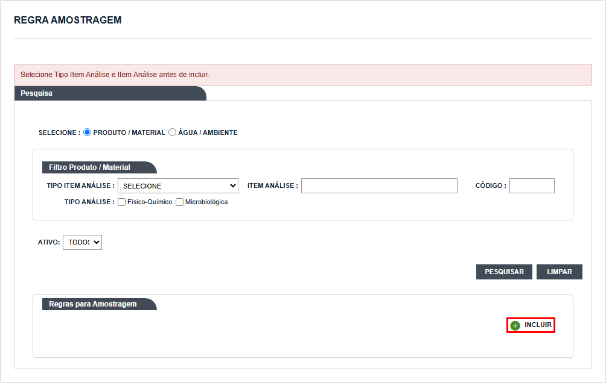
A imagem mostra a faixa rosa com essa mensagem acima do quadro "Pesquisa". É igual ao legado.
- Escolher o item e incluir. Escolha o TIPO ITEM ANÁLISE (Granel, Matéria-Prima, Material Embalagem, Produto Acabado ou Semi-Elaborado), digite o item e escolha na lista; marque o Tipo Análise e clique em INCLUIR. Abre o formulário REGRA DE AMOSTRAGEM com o item, o código e o tipo de item bloqueados e estes campos: TIPO ANÁLISE (Físico-Químico ou Microbiológico), NOME DA REGRA, VERIF. AMOSTRAGEM, TIPO DE CÁLCULO (Por percentual), QTDE. CÁLCULO, TOLERÂNCIA (%), UNIDADE e ATIVO (Sim marcado). Botões SALVAR e VOLTAR.
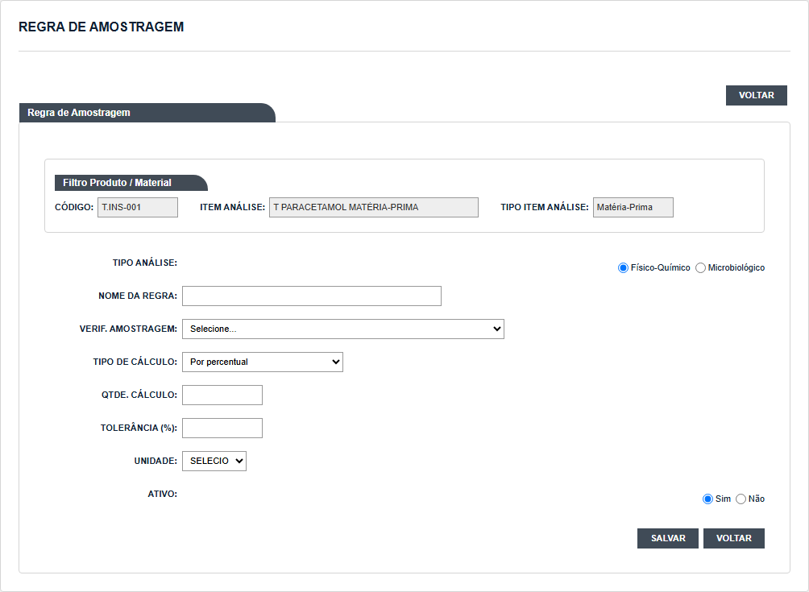
A imagem mostra o formulário "Regra de Amostragem" em branco do item T.INS-001, com Físico-Químico marcado, Tipo de Cálculo "Por percentual", Ativo = Sim e a lista Unidade com o texto "SELECIO" cortado (cosmético, ponto para validar).
- Salvar vazio (para conhecer a mensagem). Clique em SALVAR sem preencher: aparece "Preencha Nome da Regra, Tipo de Cálculo, Quantidade e Tolerância.".
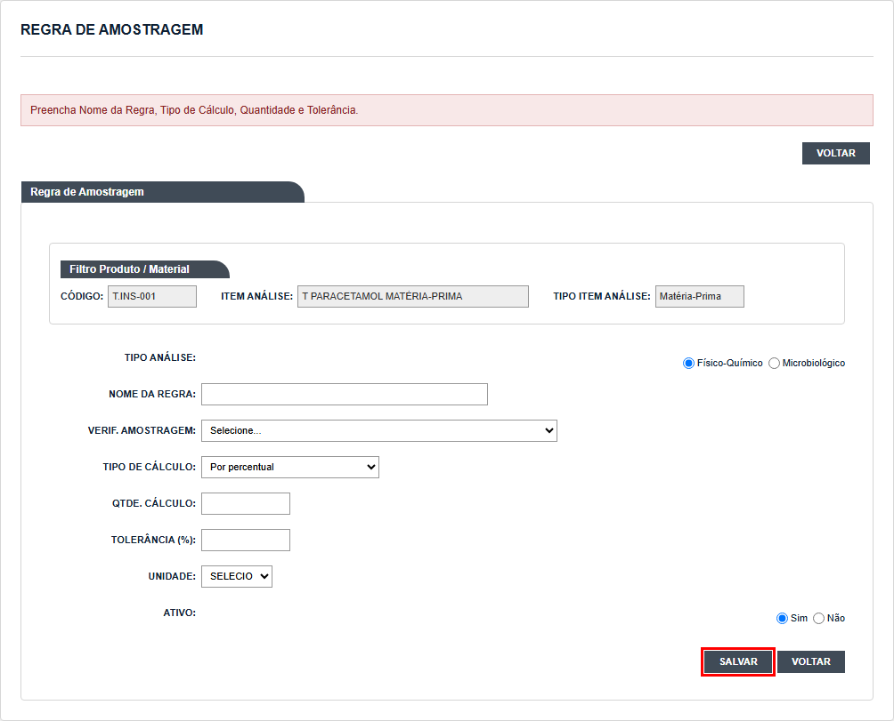
A imagem mostra a faixa rosa com essa mensagem sobre o formulário vazio.
- Quantidade e tolerância precisam ser números válidos. Texto ("xyz" na quantidade e "abc" na tolerância) e valores negativos (-5 e -1) são recusados. A quantidade é conferida primeiro: com as duas erradas, aparece "Qtde. Cálculo: informe um número válido com até cinco casas decimais."; se só a tolerância está errada, a mensagem fala dela: "Tolerância (%): informe um número válido com até cinco casas decimais.". Decimais como "1,5" e "2.5" são aceitos.
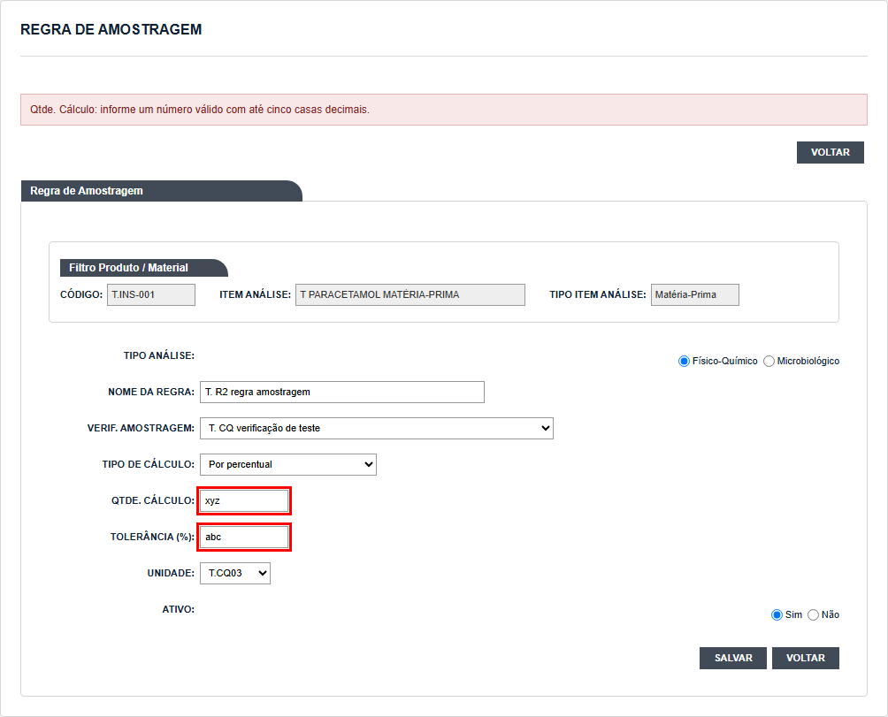
A imagem mostra a faixa rosa com a mensagem sobre o formulário com "xyz" em Qtde. Cálculo e "abc" em Tolerância.
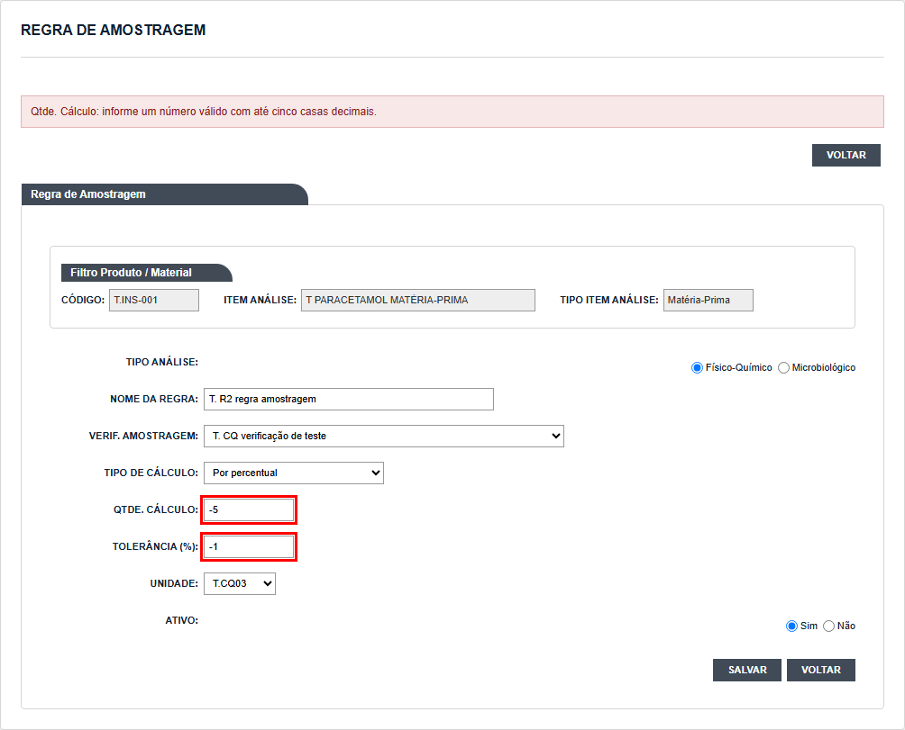
A imagem mostra a mesma faixa com -5 em Qtde. Cálculo e -1 em Tolerância.
Tolerância acima de 100 é aceita. Com quantidade 10 e tolerância 150, o sistema grava a regra (API 201) e, ao reabrir, mostra "150,00" (DV-CQ-N-015).
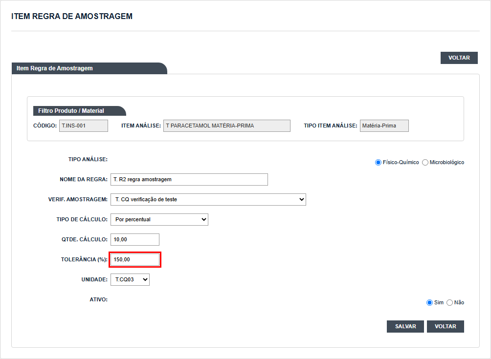
A imagem mostra a regra reaberta para edição, com a Tolerância (%) em "150,00" destacada em vermelho.
- Preencher corretamente. Digite o Nome da Regra, escolha o Verif. Amostragem, o Tipo de Cálculo, a Qtde. Cálculo, a Tolerância (%) e a Unidade.
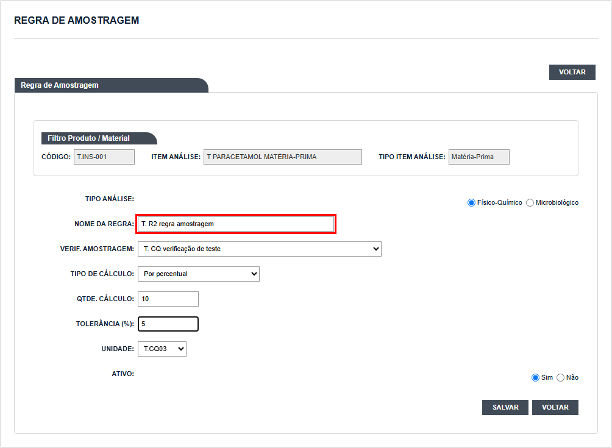
A imagem mostra "T. R2 regra amostragem", o checklist "T. CQ verificação de teste", cálculo Por percentual, quantidade 10, tolerância 5 e unidade T.CQ03.
A lista Tipo de Cálculo tem "Por percentual" e "Por valor absoluto"; o rótulo continua "TOLERÂNCIA (%)" nos dois (igual ao legado, DV-CQ-011). A Unidade é sempre escolhível: nunca fica bloqueada (no legado ficava para produto e material). Para o tipo de análise Microbiológico, o formulário é o mesmo.
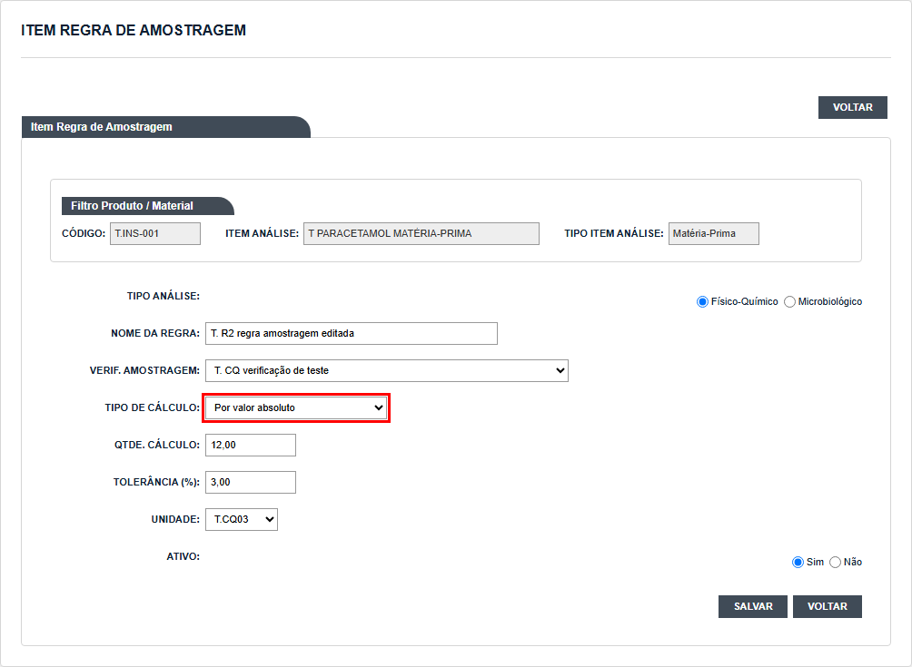
A imagem mostra a regra aberta com "Por valor absoluto" escolhido (destacado), quantidade 12,00, tolerância 3,00 e unidade T.CQ03.
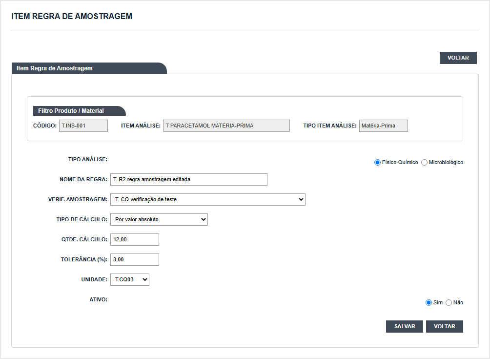
A imagem mostra a mesma regra reaberta, com "Por valor absoluto" gravado (quantidade 12,00, tolerância 3,00).
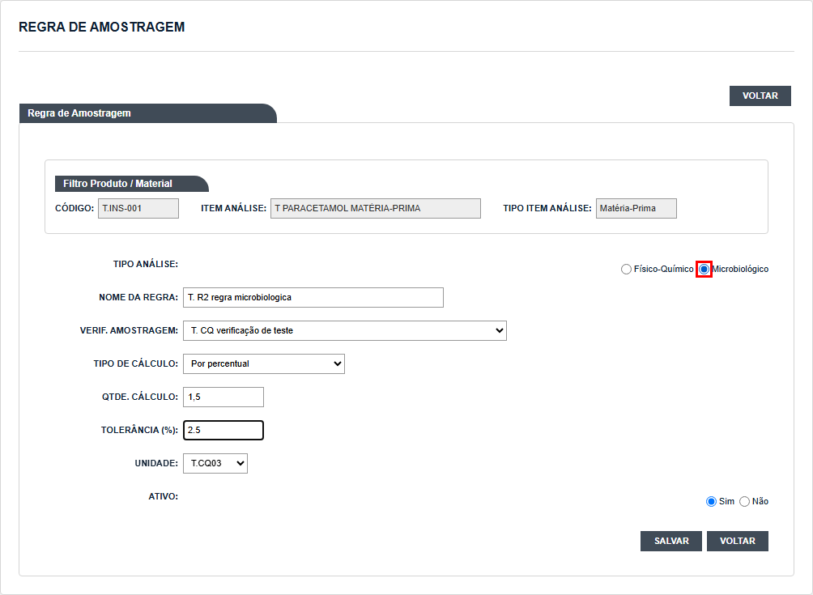
A imagem mostra o formulário com Microbiológico marcado (destacado), nome "T. R2 regra microbiologica", quantidade "1,5" e tolerância "2.5".
- Salvar. Clique em SALVAR. Na inclusão não há pergunta de confirmação; o botão fica esmaecido enquanto grava. Em seguida a tela volta à pesquisa em branco (filtros e lista limpos), sem nenhuma mensagem de sucesso (API 201; DV-CQ-N-013, mesma família; ver "Cuidados e falhas conhecidas"). Para conferir, é preciso pesquisar de novo.

A imagem mostra a tela dois segundos depois de SALVAR: a pesquisa com todos os campos vazios e o quadro "Regras para Amostragem" sem linhas, sem nenhum texto de confirmação.
- Regra repetida. Se já existe regra para o mesmo item e tipo de análise, o sistema recusa com "Regra já existe para o item e Tipo Análise selecionados.".
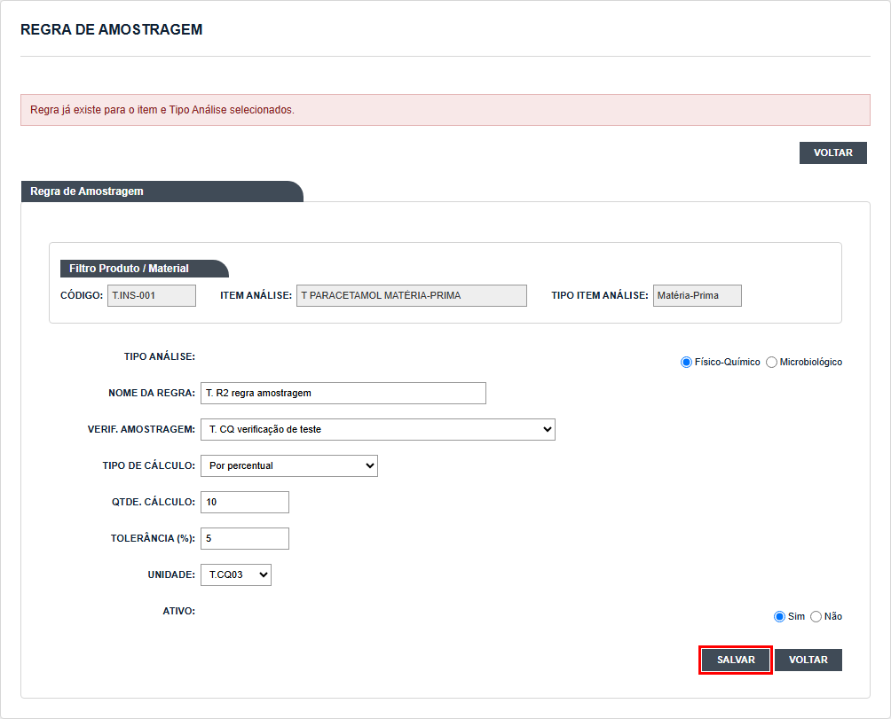
A imagem mostra a faixa rosa com essa mensagem sobre o formulário preenchido igual ao anterior.
- Conferir na lista. Escolha o item e clique em PESQUISAR. A lista "Regras para Amostragem" mostra NOME, TIPO ANÁLISE e ITEM, e três ícones: lápis (editar), X vermelho (excluir) e o selo azul LOG (histórico; não é um relógio).
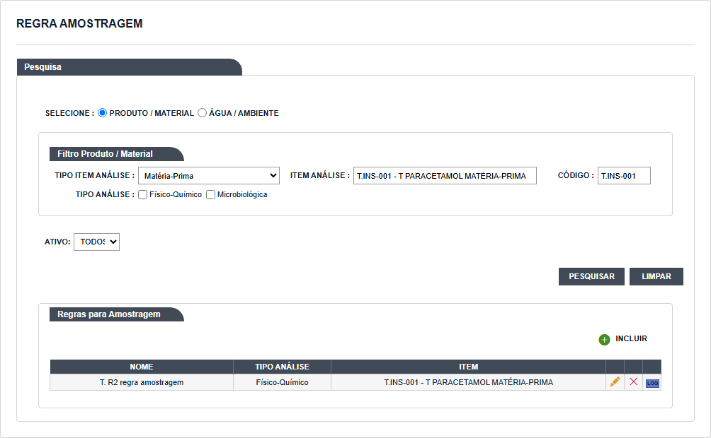
A imagem mostra a regra "T. CQ regra amostragem", Físico-Químico, item "T.INS-001 - T PARACETAMOL MATÉRIA-PRIMA", com os três ícones.
Os filtros funcionam: TIPO ANÁLISE (por exemplo, só Microbiológica) e ATIVO (por exemplo, NÃO, que mostra só a regra inativa). O mesmo item pode ter uma regra Físico-Química e outra Microbiológica ao mesmo tempo.
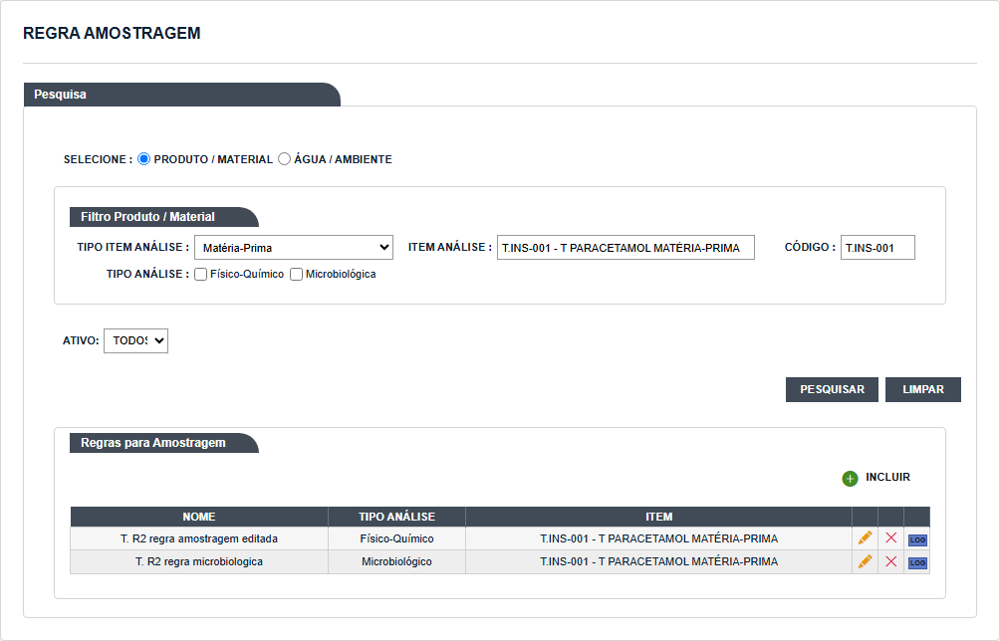
A imagem mostra as regras "T. R2 regra amostragem editada" (Físico-Químico) e "T. R2 regra microbiologica" (Microbiológico) do mesmo item T.INS-001.
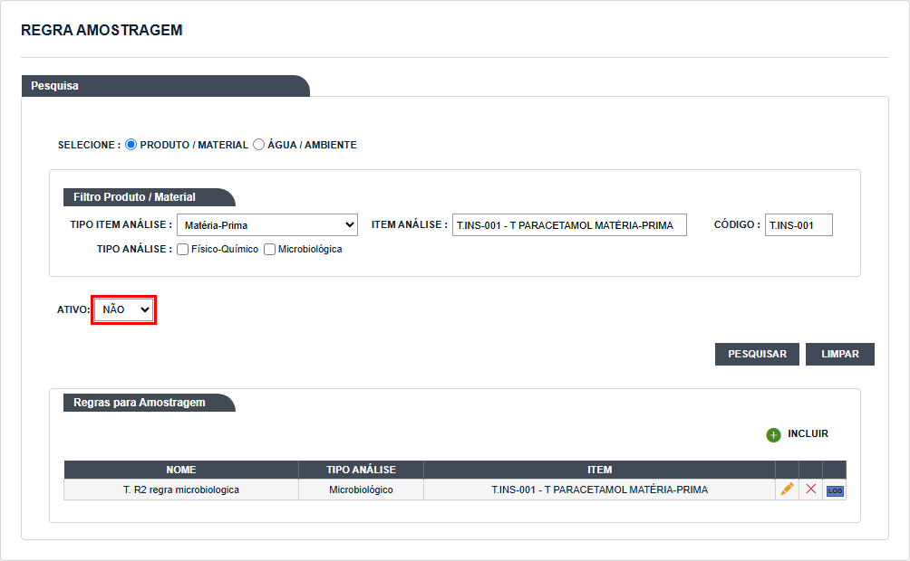
A imagem mostra o filtro ATIVO = NÃO destacado e a lista só com a regra microbiológica (inativa).
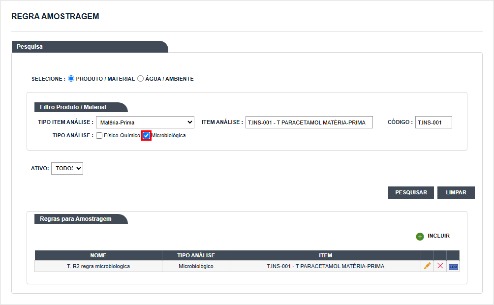
A imagem mostra a caixa Microbiológica marcada e a lista só com a regra microbiológica.
-
Alterar. Clique no lápis. A tela mostra o formulário (agora com o título ITEM REGRA DE AMOSTRAGEM) com os valores gravados (quantidade "10,00" e tolerância "5,00"). Mude o que precisa (para inativar, marque Ativo = Não; a inativação grava) e clique em SALVAR.
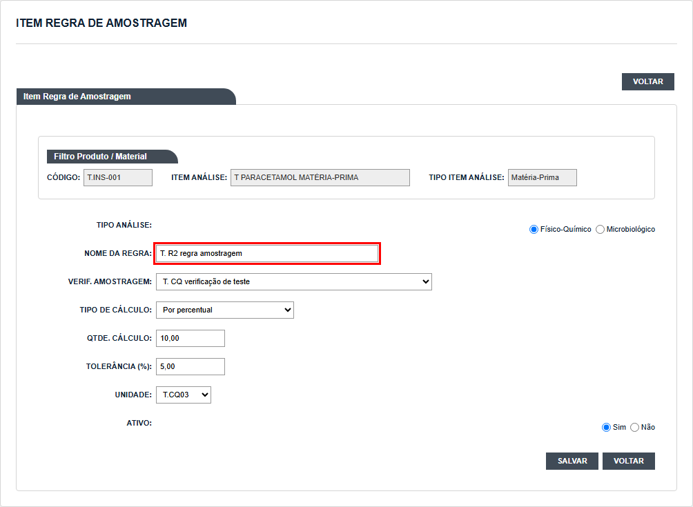
Regra aberta para edição · clique para ampliar A imagem mostra o formulário "Item Regra de Amostragem" com a regra gravada: quantidade 10,00, tolerância 5,00, unidade T.CQ03.
O sistema abre a caixa "CONFIRMAR ALTERAÇÃO: Confirma a alteração da Regra de Amostragem? Informe a justificativa:" com o campo Justificativa* obrigatório e os botões CANCELAR e CONFIRMAR.
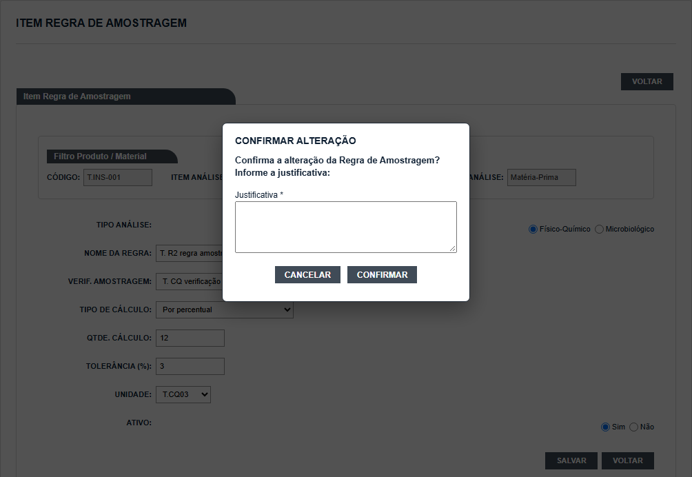
Confirmação da alteração com justificativa · clique para ampliar A imagem mostra essa caixa, com a justificativa ainda vazia.
Se clicar em CONFIRMAR sem justificativa, a caixa continua aberta e aparece a faixa rosa "Informe a justificativa da alteração.".
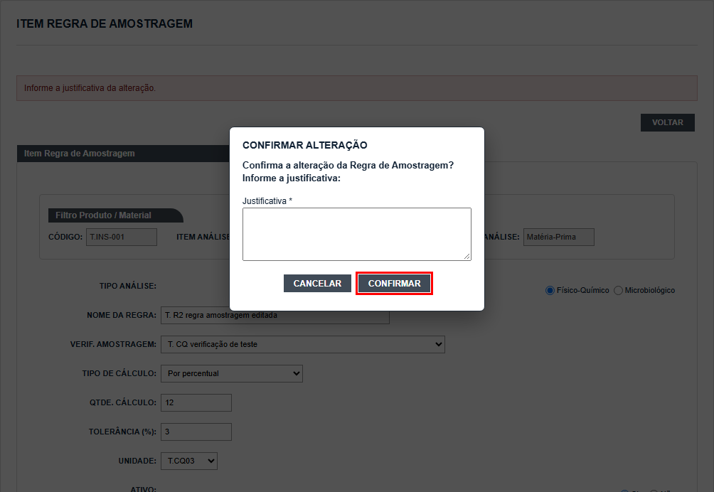
Alteração sem justificativa · clique para ampliar A imagem mostra a faixa rosa "Informe a justificativa da alteração." no alto e a caixa "Confirmar alteração" ainda aberta, com a justificativa vazia e o botão CONFIRMAR destacado.
Com a justificativa preenchida, a alteração grava (API 204) e a tela volta à pesquisa em branco, sem mensagem de sucesso.

Tela depois de confirmar a alteração · clique para ampliar A imagem mostra a pesquisa com os filtros e a lista vazios, sem nenhum texto.

Lista depois de alterar · clique para ampliar A imagem mostra a lista, pesquisada de novo, com a regra "T. R2 regra amostragem editada".
-
Ver o histórico. Clique no selo azul LOG.
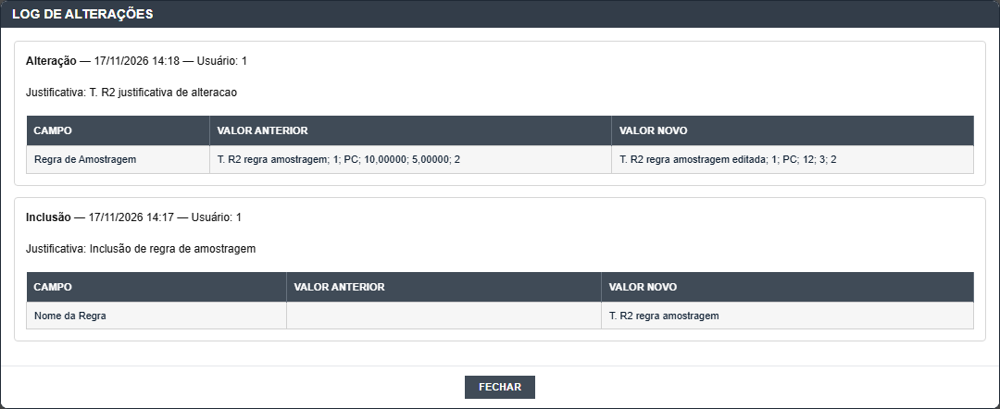
Histórico da regra · clique para ampliar A imagem mostra a janela "LOG DE ALTERAÇÕES" com a Alteração (17/11/2026 14:18; justificativa "T. R2 justificativa de alteracao"; campo "Regra de Amostragem": antes "T. R2 regra amostragem; 1; PC; 10,00000; 5,00000; 2", depois "T. R2 regra amostragem editada; 1; PC; 12; 3; 2") e a Inclusão (justificativa "Inclusão de regra de amostragem"; campo "Nome da Regra"). Os números 1 e 2 dentro do texto são códigos internos (checklist e unidade), não nomes; o Usuário aparece como número ("Usuário: 1"; DV-CQ-N-006).
-
Excluir. Clique no X vermelho. A caixa "CONFIRMAR EXCLUSÃO: Deseja excluir a regra selecionada?" pede Justificativa* e traz CANCELAR e CONFIRMAR.
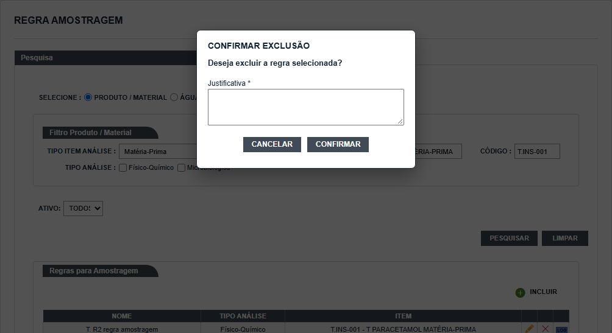
Confirmação da exclusão · clique para ampliar A imagem mostra a caixa de exclusão com o campo Justificativa* vazio, sobre a lista com a regra.
Sem justificativa, o CONFIRMAR não exclui: a caixa continua aberta com a faixa rosa "Informe a justificativa para exclusão.".
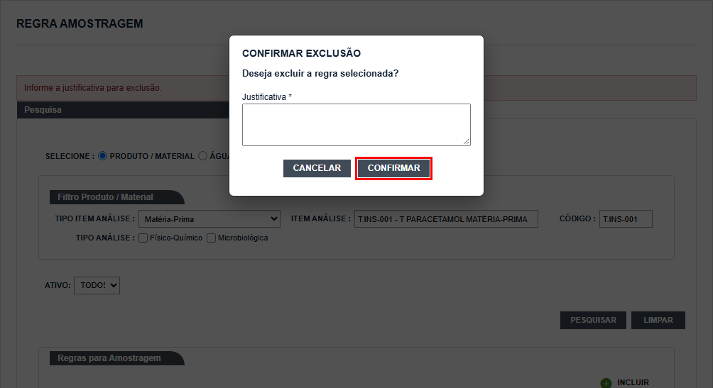
Exclusão sem justificativa · clique para ampliar A imagem mostra a faixa rosa "Informe a justificativa para exclusão." e a caixa "Confirmar exclusão" aberta, com o CONFIRMAR destacado.
Com a justificativa, a regra é excluída (API 204) e a lista volta mantendo o filtro do item, sem mensagem de sucesso (diferente da alteração e da inclusão, que voltam em branco).
Tela depois de excluir · clique para ampliar A imagem mostra a pesquisa com o item T.INS-001 ainda preenchido e a lista com a outra regra do item ("T. R2 regra amostragem editada"), sem nenhum texto de confirmação.
-
Água / Ambiente. Marque a opção ÁGUA / AMBIENTE: os filtros trocam (o quadro passa a "Filtro Água / Ambiente", sem o campo CÓDIGO). Não foi possível incluir uma regra: não há item de água ou ambiente cadastrado, a pesquisa devolve "A pesquisa não retornou nenhum resultado." e a lista de itens vem vazia.
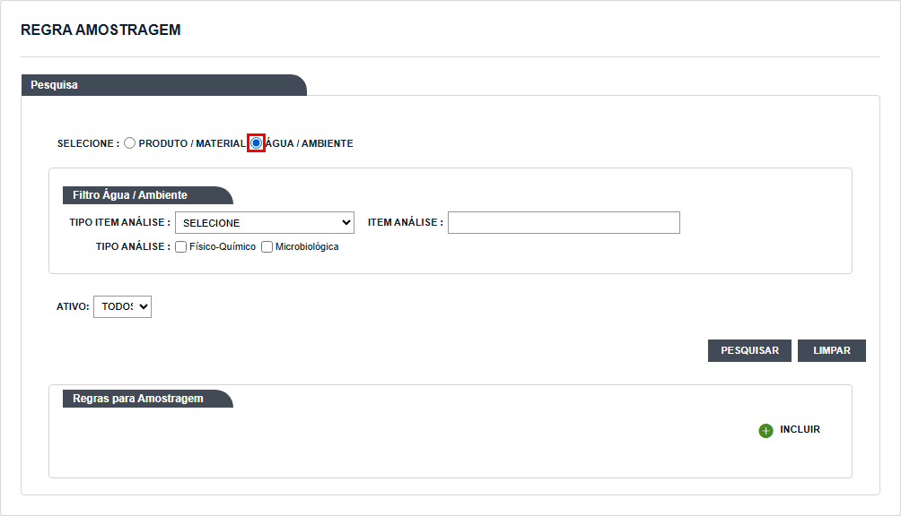
Água / Ambiente · clique para ampliar A imagem mostra a opção ÁGUA / AMBIENTE marcada (destacada), o quadro "Filtro Água / Ambiente" e o quadro "Regras para Amostragem" sem linhas.